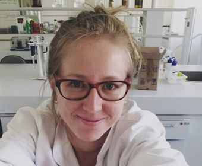
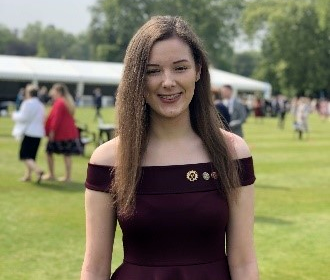
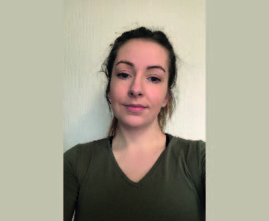
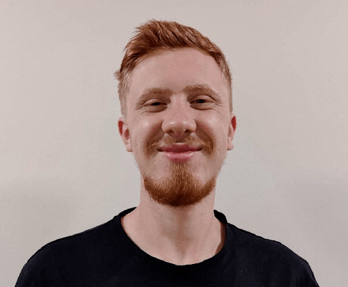
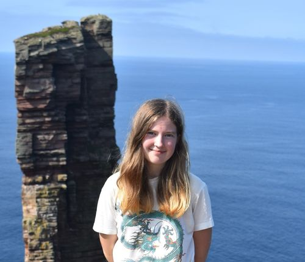
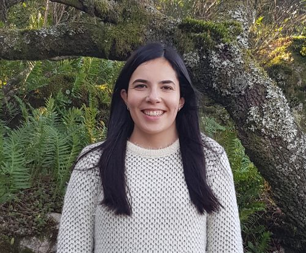
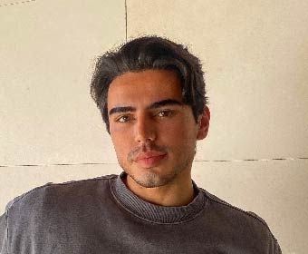

Past Members
Over the years, the EnGeL / eWorm Research Group has been shaped by the students, researchers, and interns who passed through the lab. We're grateful for their contributions and proud of where they've gone since.
Raquel Juan Ovejero

Talita Ferreira
Agronomist specializing in soil biology and invertebrate ecology. Her doctoral research examined how Pontoscolex corethrurus earthworms shape the fertility of Amazonian dark earths (ADEs).

Saffron Rosier
BSc International Wildlife Biology student (University of South Wales) who developed bioinformatic methods for recovering full mitochondrial genomes from giraffe NGS data.

Mary Kate Doherty
Studied Wildlife & Conservation Management at the University of South Wales, researching the effect of biofertilizer on soil organic carbon in Irish agricultural soils.

Lukasz Sitko
Medical Sciences student (University of South Wales) who mined p53 gene sequences in the genome of the volcano-dwelling earthworm Pontoscolex corethrurus.

Fleurtje Coppen
Studied International Wildlife Biology at the University of South Wales, assembling the mitochondrial and nuclear genome of the African pouched mouse (Saccostomus campestris).
Santenay Ayers

Mariana Nunes
